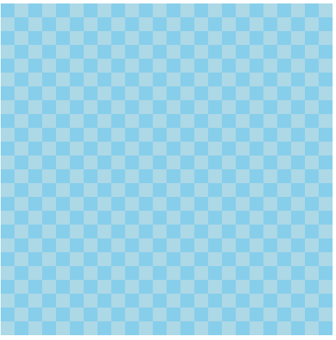
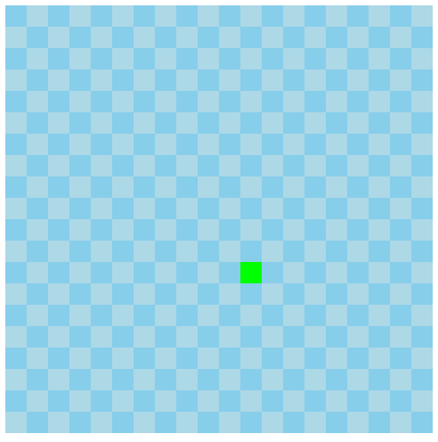
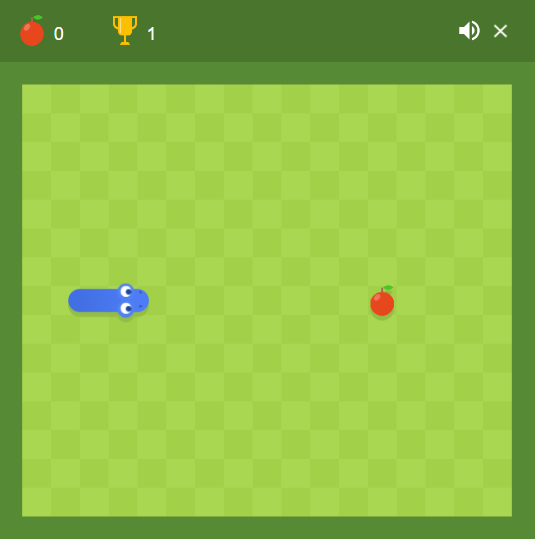

For this mini-project, I created a simple version of the classic snake game using p5 and p5play
libraries. This was implemented through Javascript and HTML coding. Below, I will go into detail
on how I created this game.
Step 1:
I began this project by looking at different versions of snake games online. I decided to begin
developing my game by creating the classic grid background. I settled on a light and dark blue
color scheme and wrote p5.js code to create this checkerboard pattern. The grid is 24x24 on a
canvas size of 480x480.

Step 2:
Next, I began creating the snake object and experimenting with ways to control it. This required
me to create a snake class within my javascript, where I would be able to implement many functions
for use in my game logic. I began by creating a simple square that would move in the last pressed
arrow key direction. This "snake" moved much too fast for the game, so I had to figure out how
to change the framerate of the game to make it move slower. Here is a gif of the original
movement speed.

Step 3:
Once I figured out the framerate issues, it was time to begin adding logic and more features
to the game. The first addition was a "food" item that would spawn on a random square of the grid
This was pretty easy to implement using the random function to select a square on the grid.
What was more difficult, was detecting when the snake ran into the food and moving the food
to a new random square. This was implemented through my checkFoodCollision function.
Step 4:
Step four was quite difficult. It was increasing the length of the snake for each food eaten
and getting the lengthened snake to follow the path of the head around the grid. This feature
was addressed mainly through turning the snake into a vector of multiple squares, so I could
increase or decrease the size by adding or removing elements from the vector. The logic involved
in getting the snake's body to follow its head was pretty confusing, and I looked at the code
for many different online snake games to figure this out. This was all implemented through
the various functions of my snake class, such as grow(), draw(), update(), and the constructor
Step 5:
Step five was creating the end conditions for my game. I wanted the game to end if the snake ran
into the walls of the canvas, or into its body. This was actually pretty simple to implement, and
occurs in the checkCollision function of the snake class. This function detects both wall and body
collisions and returns the value of true, which triggers the gameOver function. I then created the
"Game Over" screen, which is entirely red and says game over. I then implemented a button that would
refresh the page and allow the user to play again. This was tricky and actually required the
implementation of an HTML button instead of a p5 element.
Step 6:
The final step of creating my game was to add some necessary game features, such as a score counter
and some fun sounds. I added a score counter to the bottom right of the screen, which would be
initialized to zero every time the site was reloaded and increase by one for each piece of food
eaten. This would also display on the game over screen so users can see their score. I then added
a fun noise for whenever the snake eats a piece of food and a game over sound when the game ends.
Finally, I decided to make the game more difficult as the score increases by ramping up the frame
rate correlating to the players score. This will make the snake move faster and require faster
reaction speed to achieve higher scores.
Step 7:
Now, it was time to publish my website using the developer toolchain walkthrough. This actually proved
to be pretty confusing and took me longer than I anticipated. After following the tutorial from class
and rereading all of the class Discord discussions, I was able to get my game to show up at my intended
URL on my GitHub pages site. However, there was one large issue that took me a while to figure out.
When I hosted my site locally, everything worked perfectly, but when I hosted in on GitHub pages,
the game would break and freeze whenever the snake ran into a piece of food. This turned out to be
an issue with playing audio on a website. After solving this issue, my game was finally working and
finished!
The largest issue I ran into was with p5 sound and my game breaking when I played it on GitHub pages.
The issue here was that websites aren't allowed to play sound until the user interacts with the website.
This is a feature that is in place to prevent websites from immediately bombarding the user with videos
or audio that they do not want to hear. This issue stumped me for a while, but I figured out through
online forums after a while that I needed to load my sounds through a preload() function at the beginning
of my javascript file. This took a couple tries to implement correctly, but eventually resolved my issue
Another large issue that I encountered was getting the snake body to follow the head as it moved around
the page. Once again, the internet assisted me and led me in the right direction. To accomplish what I
wanted, I had to restructure the way that my snake object was formed into a vector of different pieces.
This meant that I had to rewrite most of my code to interact with the snake as a vector variable.
I had to create many different functions to allow the snake to move properly, such as draw(), update(),
and grow(), each contributing a small part to the overall function of my snake. I really thought that
a game as simple as snake would be very simple to make, but there were many hiccups that gave me trouble
throughout the process of creating this game.
Improving this game, in my opinion, would entirely revolve around visuals. The game is a 24x24 grid
of squares, which is not super visually appealing. I would love to improve it by making the snake
look like an actual snake and make the food pictures of fruit such as apples and oranges. My ideal
game would look similar to the Google Snake game that comes up when you search Snake on Google.

This version of the game is very visually appealing and has effects for when the snake eats fruit
or runs into the wall. I'm not sure how difficult it would be to add features like this, but
I think it would do a lot to improve the user experience of the game.